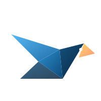

Two more abstract directions: marks that stand on their own instead of sitting on a coloured tile.
A paper letter, folded into a bird. The oldest message becomes the messenger. Built from a few crisp facets; the warm beak is the only spark of colour.

The two wings of a bird in flight are the letter M. A warm node sits between them and sends a signal upward. Monogram, bird and transmission in one shape.